Chapter 2 Análisis exploratorio de datos (EDA)
2.1 Librerías
#install.packages("tidyverse")
#install.packages("GGally")
#install.packages("gridExtra")
#install.packages("patchwork")
#install.packages("viridis")
#install.packages("tidytext")
#install.packages("Amelia")
#install.packages("vcd")
#install.packages("knitr")
#install.packages("kableExtra")
#install.packages("shiny")
#install.packages("shinyWidgets")
library(tidyverse)
library(GGally)
library(gridExtra)
library(grid)
library(patchwork)
library(viridis)
library(tidytext)
library(Amelia)
library(reshape2)
library(vcd)
library(knitr)
library(shiny)
library(shinyWidgets)
library(plotly)Se hace la carga de los datos:
Asignamos nombres de columnas según el archivo .names:
nombres <- c("wkblk", "wknwy", "wkna8", "wkona", "wkspr", "wkxbq", "wkxcr", "wkxbp",
"whxbp", "wxqsq", "cntxt", "dsopp", "dwipd", "hdchk", "katri", "mulch",
"qxmsq", "r2ar8", "reskd", "reskr", "rimmx", "rkxwp", "rxmsq", "simpl",
"skach", "skewr", "skrxp", "spcop", "stlmt", "thrsk", "bkcti", "bkna8",
"bknck", "bkovl", "bkpos", "btoeg","class")
colnames(datos) <- nombres
colnames(datos)## [1] "wkblk" "wknwy" "wkna8" "wkona" "wkspr" "wkxbq" "wkxcr" "wkxbp" "whxbp"
## [10] "wxqsq" "cntxt" "dsopp" "dwipd" "hdchk" "katri" "mulch" "qxmsq" "r2ar8"
## [19] "reskd" "reskr" "rimmx" "rkxwp" "rxmsq" "simpl" "skach" "skewr" "skrxp"
## [28] "spcop" "stlmt" "thrsk" "bkcti" "bkna8" "bknck" "bkovl" "bkpos" "btoeg"
## [37] "class"Realizamos una inspección inicial de los datos:
## [1] 3196 37## 'data.frame': 3196 obs. of 37 variables:
## $ wkblk: chr "f" "f" "f" "f" ...
## $ wknwy: chr "f" "f" "f" "f" ...
## $ wkna8: chr "f" "f" "f" "f" ...
## $ wkona: chr "f" "f" "f" "f" ...
## $ wkspr: chr "f" "t" "t" "f" ...
## $ wkxbq: chr "f" "f" "f" "f" ...
## $ wkxcr: chr "f" "f" "t" "f" ...
## $ wkxbp: chr "f" "f" "f" "f" ...
## $ whxbp: chr "f" "f" "f" "t" ...
## $ wxqsq: chr "f" "f" "f" "f" ...
## $ cntxt: chr "f" "f" "f" "f" ...
## $ dsopp: chr "f" "f" "f" "f" ...
## $ dwipd: chr "l" "l" "l" "l" ...
## $ hdchk: chr "f" "f" "f" "f" ...
## $ katri: chr "n" "n" "n" "n" ...
## $ mulch: chr "f" "f" "f" "f" ...
## $ qxmsq: chr "f" "f" "f" "f" ...
## $ r2ar8: chr "t" "t" "t" "t" ...
## $ reskd: chr "f" "f" "f" "f" ...
## $ reskr: chr "f" "f" "f" "f" ...
## $ rimmx: chr "f" "f" "f" "f" ...
## $ rkxwp: chr "f" "f" "f" "t" ...
## $ rxmsq: chr "f" "f" "f" "f" ...
## $ simpl: chr "f" "f" "f" "f" ...
## $ skach: chr "f" "f" "f" "f" ...
## $ skewr: chr "t" "t" "t" "t" ...
## $ skrxp: chr "f" "f" "f" "f" ...
## $ spcop: chr "f" "f" "f" "f" ...
## $ stlmt: chr "f" "f" "f" "f" ...
## $ thrsk: chr "f" "f" "f" "f" ...
## $ bkcti: chr "f" "f" "f" "f" ...
## $ bkna8: chr "f" "f" "f" "f" ...
## $ bknck: chr "f" "f" "f" "f" ...
## $ bkovl: chr "t" "t" "t" "t" ...
## $ bkpos: chr "t" "t" "t" "t" ...
## $ btoeg: chr "n" "n" "n" "n" ...
## $ class: chr "won" "won" "won" "won" ...## wkblk wknwy wkna8 wkona
## Length:3196 Length:3196 Length:3196 Length:3196
## Class :character Class :character Class :character Class :character
## Mode :character Mode :character Mode :character Mode :character
## wkspr wkxbq wkxcr wkxbp
## Length:3196 Length:3196 Length:3196 Length:3196
## Class :character Class :character Class :character Class :character
## Mode :character Mode :character Mode :character Mode :character
## whxbp wxqsq cntxt dsopp
## Length:3196 Length:3196 Length:3196 Length:3196
## Class :character Class :character Class :character Class :character
## Mode :character Mode :character Mode :character Mode :character
## dwipd hdchk katri mulch
## Length:3196 Length:3196 Length:3196 Length:3196
## Class :character Class :character Class :character Class :character
## Mode :character Mode :character Mode :character Mode :character
## qxmsq r2ar8 reskd reskr
## Length:3196 Length:3196 Length:3196 Length:3196
## Class :character Class :character Class :character Class :character
## Mode :character Mode :character Mode :character Mode :character
## rimmx rkxwp rxmsq simpl
## Length:3196 Length:3196 Length:3196 Length:3196
## Class :character Class :character Class :character Class :character
## Mode :character Mode :character Mode :character Mode :character
## skach skewr skrxp spcop
## Length:3196 Length:3196 Length:3196 Length:3196
## Class :character Class :character Class :character Class :character
## Mode :character Mode :character Mode :character Mode :character
## stlmt thrsk bkcti bkna8
## Length:3196 Length:3196 Length:3196 Length:3196
## Class :character Class :character Class :character Class :character
## Mode :character Mode :character Mode :character Mode :character
## bknck bkovl bkpos btoeg
## Length:3196 Length:3196 Length:3196 Length:3196
## Class :character Class :character Class :character Class :character
## Mode :character Mode :character Mode :character Mode :character
## class
## Length:3196
## Class :character
## Mode :characterVerificamos que no hayan datos faltantes o casillas vacías (NAs):
## wkblk wknwy wkna8 wkona wkspr wkxbq wkxcr wkxbp whxbp wxqsq cntxt dsopp dwipd
## 0 0 0 0 0 0 0 0 0 0 0 0 0
## hdchk katri mulch qxmsq r2ar8 reskd reskr rimmx rkxwp rxmsq simpl skach skewr
## 0 0 0 0 0 0 0 0 0 0 0 0 0
## skrxp spcop stlmt thrsk bkcti bkna8 bknck bkovl bkpos btoeg class
## 0 0 0 0 0 0 0 0 0 0 0
No tenemos NAs
Las variables de este dataset son categóricas (representan características del tablero con valores como t, f, n, b, g, l, w). Para que R las interprete correctamente como categorías y no como texto plano, las convertimos a factores.
## 'data.frame': 3196 obs. of 37 variables:
## $ wkblk: Factor w/ 2 levels "f","t": 1 1 1 1 1 1 1 1 1 1 ...
## $ wknwy: Factor w/ 2 levels "f","t": 1 1 1 1 1 1 1 1 1 1 ...
## $ wkna8: Factor w/ 2 levels "f","t": 1 1 1 1 1 1 1 1 1 1 ...
## $ wkona: Factor w/ 2 levels "f","t": 1 1 1 1 1 1 1 1 1 1 ...
## $ wkspr: Factor w/ 2 levels "f","t": 1 2 2 1 1 1 1 2 1 1 ...
## $ wkxbq: Factor w/ 2 levels "f","t": 1 1 1 1 1 1 1 1 1 1 ...
## $ wkxcr: Factor w/ 2 levels "f","t": 1 1 2 1 1 1 1 1 1 2 ...
## $ wkxbp: Factor w/ 2 levels "f","t": 1 1 1 1 1 1 1 1 1 1 ...
## $ whxbp: Factor w/ 2 levels "f","t": 1 1 1 2 1 1 2 1 1 1 ...
## $ wxqsq: Factor w/ 2 levels "f","t": 1 1 1 1 1 1 1 1 1 1 ...
## $ cntxt: Factor w/ 2 levels "f","t": 1 1 1 1 1 1 1 2 2 2 ...
## $ dsopp: Factor w/ 2 levels "f","t": 1 1 1 1 1 1 1 1 1 1 ...
## $ dwipd: Factor w/ 2 levels "g","l": 2 2 2 2 2 2 2 2 2 2 ...
## $ hdchk: Factor w/ 2 levels "f","t": 1 1 1 1 1 1 1 1 1 1 ...
## $ katri: Factor w/ 3 levels "b","n","w": 2 2 2 2 2 2 2 2 2 2 ...
## $ mulch: Factor w/ 2 levels "f","t": 1 1 1 1 1 1 1 1 1 1 ...
## $ qxmsq: Factor w/ 2 levels "f","t": 1 1 1 1 1 1 1 1 1 1 ...
## $ r2ar8: Factor w/ 2 levels "f","t": 2 2 2 2 2 2 2 2 2 2 ...
## $ reskd: Factor w/ 2 levels "f","t": 1 1 1 1 1 1 1 1 1 1 ...
## $ reskr: Factor w/ 2 levels "f","t": 1 1 1 1 1 1 1 1 1 1 ...
## $ rimmx: Factor w/ 2 levels "f","t": 1 1 1 1 1 1 1 1 1 1 ...
## $ rkxwp: Factor w/ 2 levels "f","t": 1 1 1 2 1 1 2 1 1 1 ...
## $ rxmsq: Factor w/ 2 levels "f","t": 1 1 1 1 1 1 1 1 1 1 ...
## $ simpl: Factor w/ 2 levels "f","t": 1 1 1 1 2 2 2 1 1 1 ...
## $ skach: Factor w/ 2 levels "f","t": 1 1 1 1 1 1 1 1 1 1 ...
## $ skewr: Factor w/ 2 levels "f","t": 2 2 2 2 2 2 2 2 2 2 ...
## $ skrxp: Factor w/ 2 levels "f","t": 1 1 1 1 1 1 1 1 1 1 ...
## $ spcop: Factor w/ 2 levels "f","t": 1 1 1 1 1 1 1 1 1 1 ...
## $ stlmt: Factor w/ 2 levels "f","t": 1 1 1 1 1 1 1 1 1 1 ...
## $ thrsk: Factor w/ 2 levels "f","t": 1 1 1 1 1 2 1 1 1 1 ...
## $ bkcti: Factor w/ 2 levels "f","t": 1 1 1 1 1 1 1 1 2 1 ...
## $ bkna8: Factor w/ 2 levels "f","t": 1 1 1 1 1 1 1 1 1 1 ...
## $ bknck: Factor w/ 2 levels "f","t": 1 1 1 1 1 1 1 1 1 1 ...
## $ bkovl: Factor w/ 2 levels "f","t": 2 2 2 2 2 2 2 2 2 2 ...
## $ bkpos: Factor w/ 2 levels "f","t": 2 2 2 2 2 2 2 2 2 2 ...
## $ btoeg: Factor w/ 2 levels "n","t": 1 1 1 1 1 1 1 1 1 1 ...
## $ class: Factor w/ 2 levels "nowin","won": 2 2 2 2 2 2 2 2 2 2 ...2.2 Análisis de la variable target “class”
Tabla de frecuencias:
tabla_target <- datos %>%
count(class, name = "Frecuencia") %>%
mutate(
Porcentaje = round((Frecuencia / sum(Frecuencia)) * 100, 1),
Etiqueta = paste0(Frecuencia, " (", Porcentaje, "%)")
)
knitr::kable(tabla_target)| class | Frecuencia | Porcentaje | Etiqueta |
|---|---|---|---|
| nowin | 1527 | 47.8 | 1527 (47.8%) |
| won | 1669 | 52.2 | 1669 (52.2%) |
Gráfico de barras:
fig_bar <- plot_ly(
data = tabla_target,
x = ~class,
y = ~Frecuencia,
type = "bar",
color = ~class,
colors = c("steelblue", "#56B4E9"),
text = ~Etiqueta,
textposition = "outside",
hoverinfo = "text",
hovertemplate = "<b>%{x}</b><br>Frecuencia: %{y}<br>%{text}<extra></extra>"
)
fig_bar <- layout(
fig_bar,
title = "Distribución de la variable target",
xaxis = list(title = "Clase"),
yaxis = list(title = "Frecuencia", range = c(0, max(tabla_target$Frecuencia) * 1.15)),
showlegend = FALSE,
margin = list(l = 50, r = 50, t = 60, b = 50)
)
fig_barGráfico de torta para visualizar mejor la proporción:
fig_pie <- plot_ly(
data = tabla_target,
labels = ~class,
values = ~Frecuencia,
type = "pie",
text = ~Etiqueta,
textposition = "inside",
textinfo = "text",
hoverinfo = "label+percent+value",
hovertemplate = "<b>%{label}</b><br>Frecuencia: %{value}<br>Porcentaje: %{percent}<extra></extra>",
marker = list(colors = c("steelblue", "#56B4E9")),
pull = c(0.05, 0)
)
fig_pie <- layout(
fig_pie,
title = "Distribución de la variable target",
showlegend = TRUE,
legend = list(orientation = "h", y = -0.1, x = 0.5),
margin = list(l = 40, r = 40, t = 60, b = 80)
)
fig_pieEn 1669 partidas, el 52.2%, resultó won, es decir que las blancas ganaron, y en 1527 partidas, el 47.8%, resultó nowin, es decir que el peón negro logró coronar o las negras consiguieron tablas; la diferencia entre ambas clases es de solo 4.4 puntos porcentuales, lo que indica que el dataset no tiene un sesgo significativo hacia ninguna clase.
2.3 Análisis de las variables independientes
Número de niveles por variable:
frecuencias <- datos %>%
select(-class) %>%
pivot_longer(everything(),
names_to = "variable",
values_to = "valor") %>%
count(variable, valor) %>%
group_by(variable) %>%
mutate(
porcentaje = 100 * n / sum(n)
)Variables con 2 niveles:
binarias <- frecuencias %>%
group_by(variable) %>%
filter(n() == 2) %>%
ungroup() %>%
select(variable, valor, porcentaje) %>%
pivot_wider(names_from = valor, values_from = porcentaje, values_fill = 0)
knitr::kable(binarias)| variable | f | t | n | g | l |
|---|---|---|---|---|---|
| bkcti | 82.32165 | 17.6783479 | 0.00000 | 0.00000 | 0.00000 |
| bkna8 | 94.52441 | 5.4755945 | 0.00000 | 0.00000 | 0.00000 |
| bknck | 62.07760 | 37.9224030 | 0.00000 | 0.00000 | 0.00000 |
| bkovl | 37.20275 | 62.7972466 | 0.00000 | 0.00000 | 0.00000 |
| bkpos | 26.62703 | 73.3729662 | 0.00000 | 0.00000 | 0.00000 |
| btoeg | 0.00000 | 24.6871089 | 75.31289 | 0.00000 | 0.00000 |
| cntxt | 56.85232 | 43.1476846 | 0.00000 | 0.00000 | 0.00000 |
| dsopp | 89.48686 | 10.5131414 | 0.00000 | 0.00000 | 0.00000 |
| dwipd | 0.00000 | 0.0000000 | 0.00000 | 31.00751 | 68.99249 |
| hdchk | 99.53066 | 0.4693367 | 0.00000 | 0.00000 | 0.00000 |
| mulch | 95.11890 | 4.8811014 | 0.00000 | 0.00000 | 0.00000 |
| qxmsq | 96.96496 | 3.0350438 | 0.00000 | 0.00000 | 0.00000 |
| r2ar8 | 31.28911 | 68.7108886 | 0.00000 | 0.00000 | 0.00000 |
| reskd | 99.18648 | 0.8135169 | 0.00000 | 0.00000 | 0.00000 |
| reskr | 84.91865 | 15.0813517 | 0.00000 | 0.00000 | 0.00000 |
| rimmx | 81.72716 | 18.2728411 | 0.00000 | 0.00000 | 0.00000 |
| rkxwp | 79.97497 | 20.0250313 | 0.00000 | 0.00000 | 0.00000 |
| rxmsq | 94.27409 | 5.7259074 | 0.00000 | 0.00000 | 0.00000 |
| simpl | 61.79599 | 38.2040050 | 0.00000 | 0.00000 | 0.00000 |
| skach | 99.65582 | 0.3441802 | 0.00000 | 0.00000 | 0.00000 |
| skewr | 30.66333 | 69.3366708 | 0.00000 | 0.00000 | 0.00000 |
| skrxp | 94.52441 | 5.4755945 | 0.00000 | 0.00000 | 0.00000 |
| spcop | 99.96871 | 0.0312891 | 0.00000 | 0.00000 | 0.00000 |
| stlmt | 98.52941 | 1.4705882 | 0.00000 | 0.00000 | 0.00000 |
| thrsk | 95.74468 | 4.2553191 | 0.00000 | 0.00000 | 0.00000 |
| whxbp | 61.95244 | 38.0475594 | 0.00000 | 0.00000 | 0.00000 |
| wkblk | 88.82979 | 11.1702128 | 0.00000 | 0.00000 | 0.00000 |
| wkna8 | 96.24531 | 3.7546934 | 0.00000 | 0.00000 | 0.00000 |
| wknwy | 92.95995 | 7.0400501 | 0.00000 | 0.00000 | 0.00000 |
| wkona | 89.92491 | 10.0750939 | 0.00000 | 0.00000 | 0.00000 |
| wkspr | 66.61452 | 33.3854819 | 0.00000 | 0.00000 | 0.00000 |
| wkxbp | 78.22278 | 21.7772215 | 0.00000 | 0.00000 | 0.00000 |
| wkxbq | 53.87985 | 46.1201502 | 0.00000 | 0.00000 | 0.00000 |
| wkxcr | 63.39174 | 36.6082603 | 0.00000 | 0.00000 | 0.00000 |
| wxqsq | 69.61827 | 30.3817272 | 0.00000 | 0.00000 | 0.00000 |
Se muestra el porcentaje de cada característica (t, f, n, b, g, l) para cada variable, en particular, solo 2 de alguna de las 6, ya que son binarias. Se puede observar que la mayoría poseen t y f, true y false, a excepción de dwipd, con g y l
Variables con 3 niveles:
ternarias <- frecuencias %>%
group_by(variable) %>%
filter(n() == 3) %>%
ungroup() %>%
select(variable, valor, porcentaje) %>%
pivot_wider(names_from = valor, values_from = porcentaje, values_fill = 0)
knitr::kable(ternarias)| variable | b | n | w |
|---|---|---|---|
| katri | 7.008761 | 79.0363 | 13.95494 |
Se muestra el porcentaje de cada característica (n, b, w) para la variable.
Ahora,
##
## Adjuntando el paquete: 'kableExtra'## The following object is masked from 'package:dplyr':
##
## group_rowscolores_personalizados <- c(
"t" = "#2E86C1", # Azul
"f" = "#E74C3C", # Rojo
"n" = "#95A5A6", # Gris
"b" = "#1A1A1A", # Negro
"w" = "#F39C12", # Naranja
"g" = "#27AE60", # Verde
"l" = "#8E44AD" # Morado
)
graficar_pastel <- function(var) {
tabla <- datos %>%
count(!!sym(var)) %>%
mutate(
Porcentaje = round((n / sum(n)) * 100, 1),
Etiqueta = paste0(n, "\n", Porcentaje, "%"),
valor = factor(!!sym(var))
)
valores_existentes <- unique(tabla$valor)
colores_usar <- colores_personalizados[names(colores_personalizados) %in% valores_existentes]
ggplot(tabla, aes(x = "", y = n, fill = valor)) +
geom_col(width = 1) +
coord_polar(theta = "y") +
geom_text(aes(label = Etiqueta),
position = position_stack(vjust = 0.5),
size = 2.5) +
labs(
title = var,
x = NULL,
y = NULL
) +
scale_fill_manual(
values = colores_usar,
breaks = c("t", "f", "n", "b", "w", "g", "l"),
labels = c("t = True", "f = False", "n = None", "b = Black", "w = White", "g = Good", "l = Large")
) +
theme_void(base_size = 8) +
theme(
plot.title = element_text(size = 8, face = "bold", hjust = 0.5),
plot.margin = margin(0, 0, 0, 0),
legend.position = "bottom",
legend.text = element_text(size = 7),
legend.title = element_blank(),
legend.key.size = unit(0.4, "cm")
)
}
# Lista de variables
vars <- colnames(datos)[colnames(datos) != "class"]
# Crear todos los gráficos
lista_graficos <- map(vars, graficar_pastel)
# Dividir en grupos de 4
grupos <- split(lista_graficos, ceiling(seq_along(lista_graficos) / 4))
# Mostrar cada grupo con su leyenda
for (i in seq_along(grupos)) {
grobs_list <- lapply(grupos[[i]], ggplotGrob)
# Ajustar altura para que quepa la leyenda
grid.arrange(
grobs = grobs_list,
ncol = 4,
padding = unit(0.2, "cm"),
margins = unit(0.2, "cm")
)
}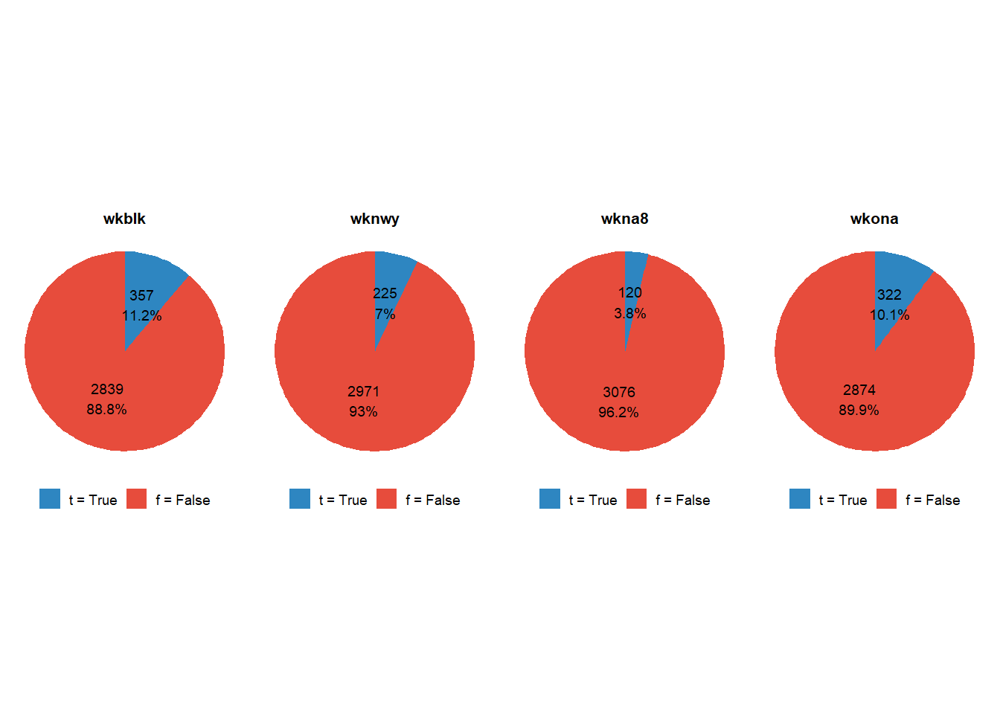
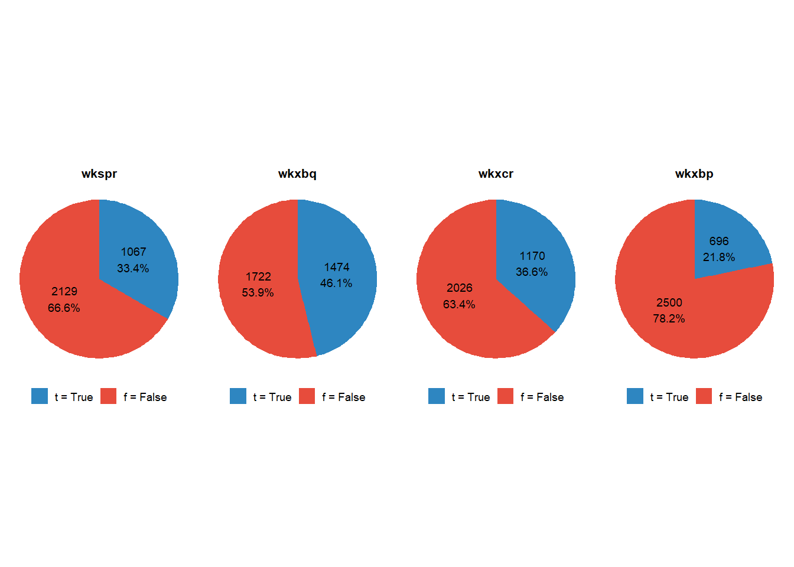
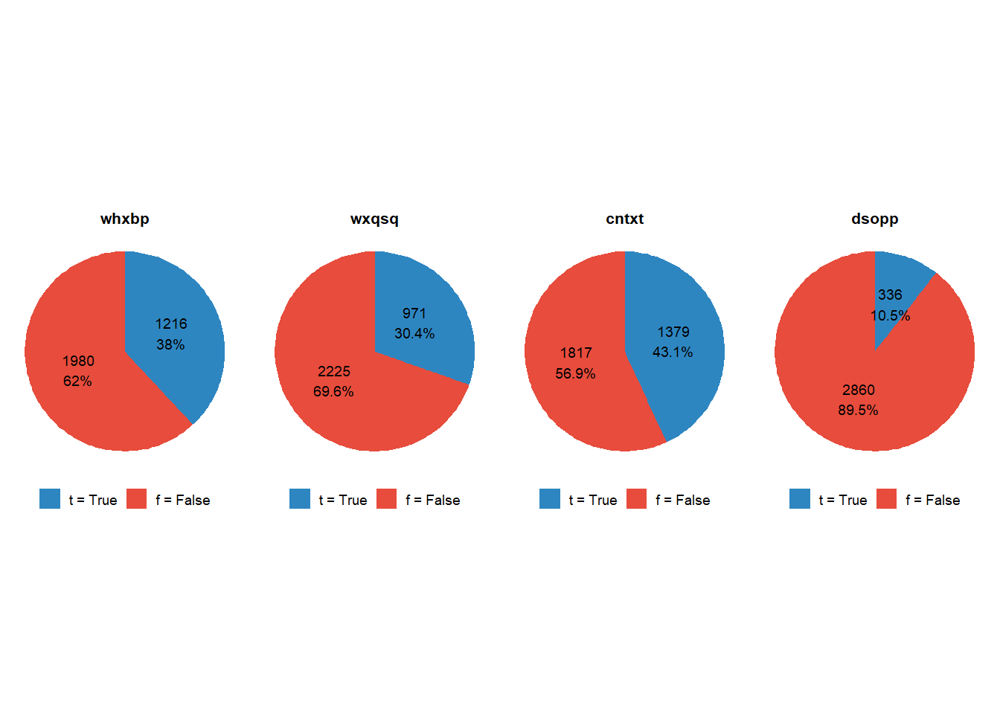
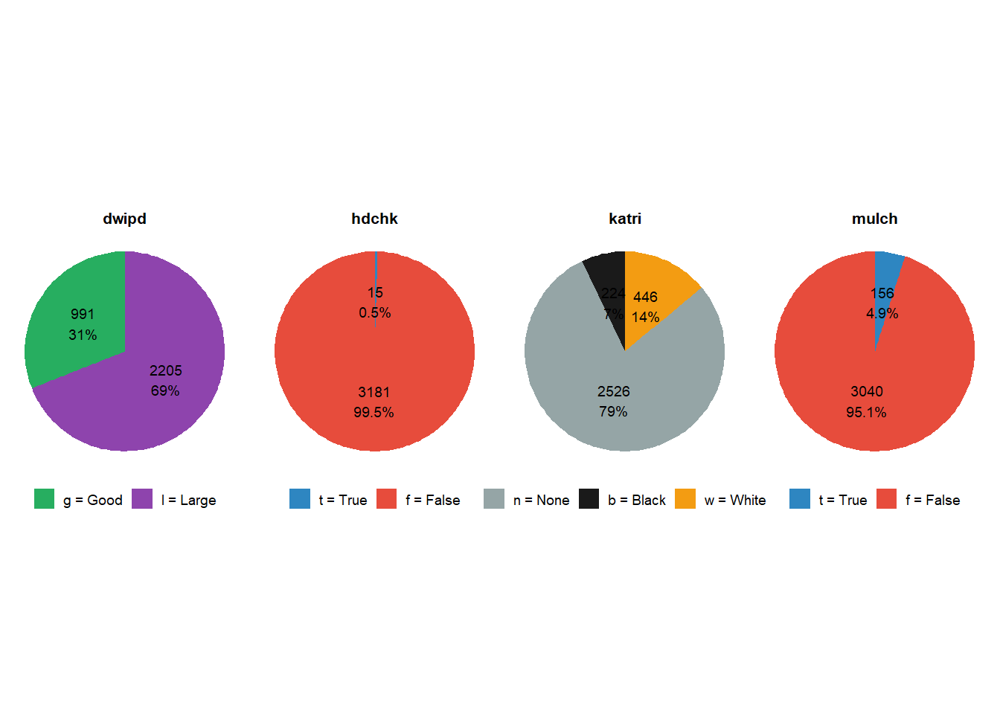
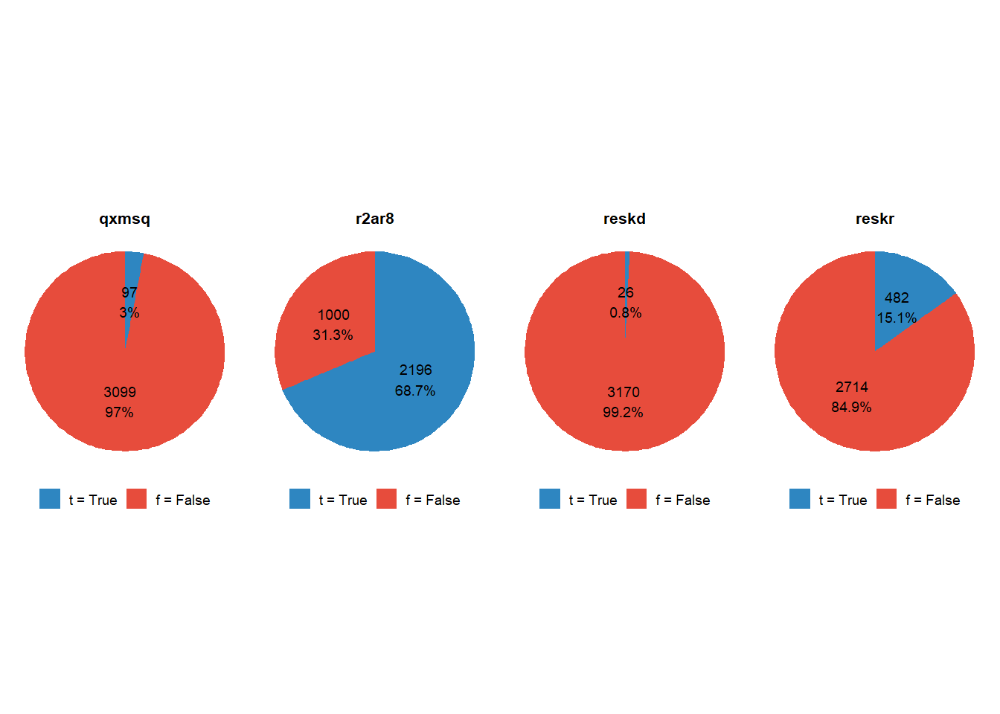
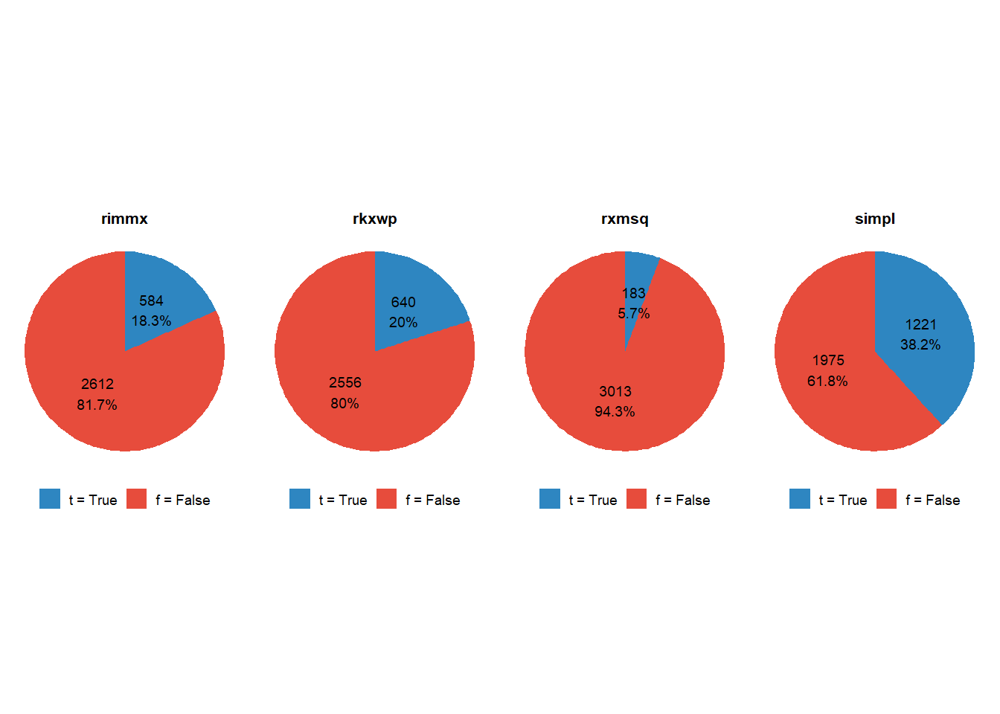
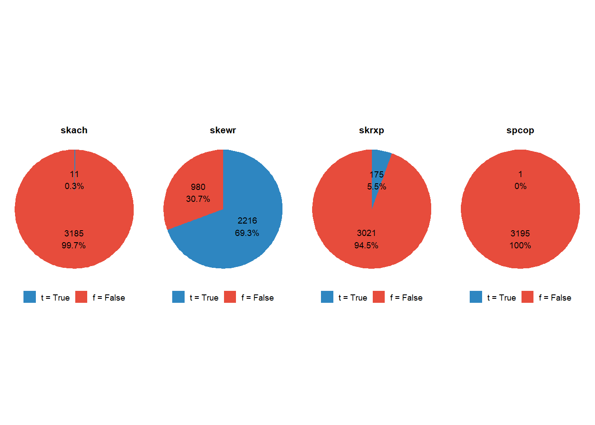
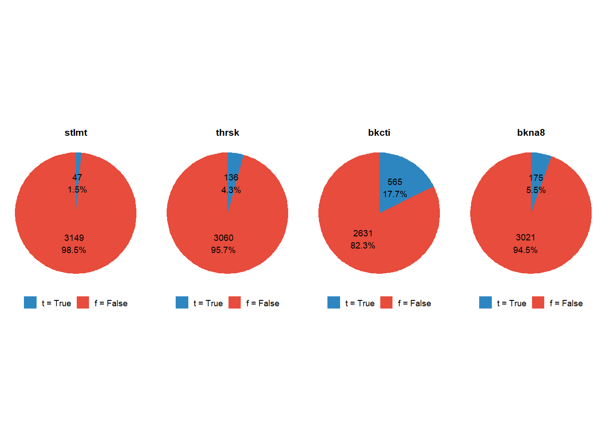
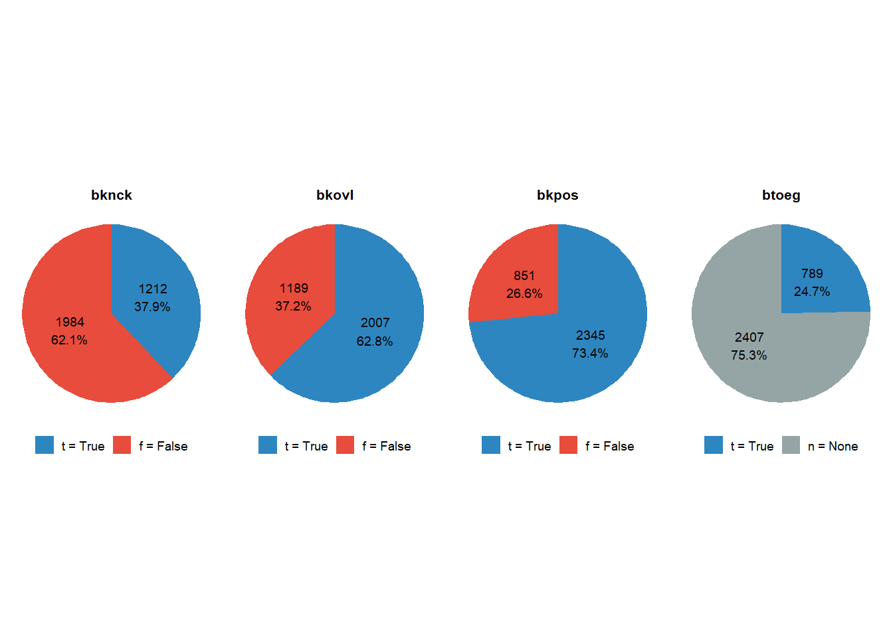
Variables del rey blanco (wk…): Se observa que el rey blanco rara vez bloquea a su propia torre (wkblk: 88.8% falso) o se encuentra en a8 (wkna8: 96.2% falso). Sin embargo, en un porcentaje significativo de posiciones (36.6%), el rey blanco puede atacar la casilla crítica b7 (wkxcr), lo que indica que las blancas tienen oportunidades de presión sobre el peón negro.
####. whxbp: La torre blanca ataca al peón negro en el 38% de las posiciones . wxqsq: Las blancas controlan la casilla de coronación (a8) en el 30.4% de las posiciones. cntxt: El rey negro está en el borde del tablero en el 43.1% de las posiciones, lo que lo hace más vulnerable a clavadas. También vemos que las tácticas avanzadas son extremadamente raras (Jaque oculto (hdchk) con 0.5%, re-clavada diferida (reskd) con 0.8%, oposición especial (spcop) con 0%, y clavada tras jaques (skach) con 0.3%), sin embargo, la posibilidad de una clavada (skewer) está presente en el 30.7% de las posiciones (skewr), lo que la convierte en una amenaza real.
Variables del rey negro (bk…): El rey negro está bajo presión en un porcentaje significativo de posiciones: en el 37.9% está en jaque (bknck), en el 37.2%** está sobrecargado (bkvol), y en el 26.6% está en posición de posible clavada (bkpos).
2.4 Análisis bivariado class vs independientes
Vamos a usar la librería vcd, Visualizing Categorical Data Para cuantificar la relación entre variables categóricas, utilizamos Cramer’s V, una medida estadística que indica la fuerza de la asociación entre dos variables; va de 0 a 1, 0 significa que no hay relación entre las variables (son independientes), y 1 significa que hay una relación perfecta (una variable determina completamente a la otra). Cramér’s V se basa en el estadístico chi-cuadrado (χ²) y se calcula como: \[ V = \sqrt{\frac{\chi^2}{n \times \min(r-1, c-1)}} \] Donde: - χ² = estadístico chi-cuadrado (mide la diferencia entre lo observado y lo esperado si fueran independientes) - n = número total de observaciones - r = número de filas de la tabla de contingencia - c = número de columnas de la tabla de contingencia
cramer_v <- function(x, y) {
tbl <- table(x, y)
chi2 <- chisq.test(tbl, simulate.p.value = TRUE)$statistic
n <- sum(tbl)
r <- min(nrow(tbl), ncol(tbl))
sqrt(as.numeric(chi2) / (n * (r - 1)))
}
vars_todas <- colnames(datos)
cramer_matrix <- matrix(0,
nrow = length(vars_todas),
ncol = length(vars_todas))
rownames(cramer_matrix) <- vars_todas
colnames(cramer_matrix) <- vars_todas
for (i in 1:length(vars_todas)) {
for (j in 1:length(vars_todas)) {
cramer_matrix[i, j] <- cramer_v(datos[[vars_todas[i]]],
datos[[vars_todas[j]]])
}
}
# 2. Crear heatmap y guardarlo como imagen PNG grande
# Abrir dispositivo gráfico con tamaño grande
png("heatmap_cramer_grande.png",
width = 3000, # 3000 píxeles de ancho
height = 3000, # 3000 píxeles de alto
res = 200) # 200 dpi de resolución
# Crear el heatmap
cramer_matrix %>%
as.data.frame() %>%
rownames_to_column("var1") %>%
pivot_longer(-var1, names_to = "var2", values_to = "cramer") %>%
ggplot(aes(x = var1, y = var2, fill = cramer)) +
geom_tile(color = "white", size = 0.3) +
geom_text(aes(label = round(cramer, 2)),
size = 3.5,
color = "black") +
scale_fill_gradient2(
low = "white",
mid = "lightblue",
high = "steelblue",
midpoint = 0.3,
limits = c(0, 1),
name = "Cramér's V"
) +
labs(
title = "Matriz de asociación (Cramér's V) - KRKPA7",
subtitle = paste("Todas las variables (", length(vars_todas), " variables)", sep = ""),
x = "",
y = ""
) +
theme_minimal(base_size = 10) +
theme(
axis.text.x = element_text(angle = 90, hjust = 1, vjust = 0.5,
size = 12),
axis.text.y = element_text(size = 12),
plot.title = element_text(size = 20, face = "bold", hjust = 0.5),
plot.subtitle = element_text(size = 16, hjust = 0.5),
legend.position = "right",
legend.title = element_text(size = 14),
legend.text = element_text(size = 12),
panel.grid = element_blank()
)
dev.off()## png
## 2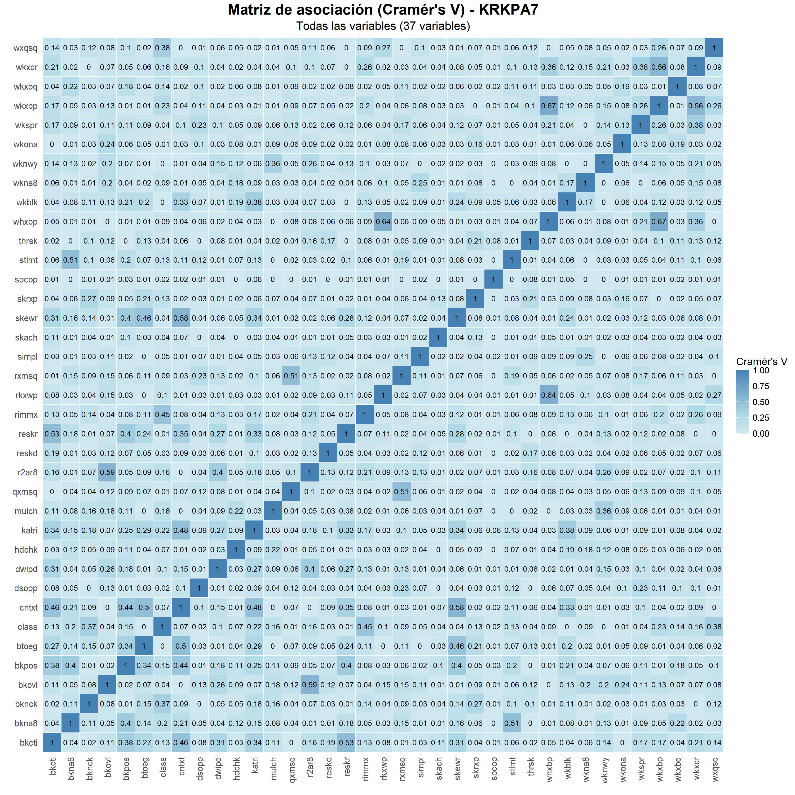
El heatmap muestra la fuerza de la asociación entre las variables predictoras y la variable objetivo (class).
Los valores más altos (azul oscuro) indican una relación más fuerte con el resultado del final de ajedrez. Los valores más bajos (blanco) sugieren que la variable es prácticamente independiente de si la posición es ganable o no.
Extraemos asociación con class:
asociacion_class <- cramer_matrix["class", ] %>%
as.data.frame() %>%
rownames_to_column("variable") %>%
rename(cramer = ".") %>%
filter(variable != "class") %>%
arrange(desc(cramer))
knitr::kable(head(asociacion_class, 5))| variable | cramer |
|---|---|
| rimmx | 0.4522840 |
| wxqsq | 0.3801012 |
| bknck | 0.3652651 |
| wkxbp | 0.2329082 |
| katri | 0.2197070 |
asociacion_class %>%
head(10) %>%
ggplot(aes(x = reorder(variable, cramer), y = cramer, fill = cramer)) +
geom_col(width = 0.6) +
coord_flip() +
scale_fill_gradient(low = "lightblue", high = "darkblue") +
geom_text(aes(label = round(cramer, 3)), hjust = -0.2, size = 3) +
labs(
title = "Top 5 factores relacionados con class",
x = "Variable",
y = "Cramer's V"
) +
theme_bw(base_size = 13) +
theme(legend.position = "none")
El análisis de asociación con Cramér’s V revela que las variables más relacionadas con el resultado (won/nowin) son:
rimmx (0.45): Captura segura de la torre blanca. Si la torre blanca puede ser capturada de forma segura por las negras, las blancas pierden su principal ventaja.
wxqsq (0.38): Control blanco de la casilla de coronación (a8). Si las blancas controlan a8, evitan que el peón negro corone.
bknck (0.365): Rey negro en jaque. Si el rey negro está en jaque, las blancas están haciendo una amenaza directa que puede llevar a la victoria.
wkxbp (0.233): Rey blanco captura el peón negro. Si el rey blanco puede capturar el peón, las blancas ganan de inmediato.
katri (0.22): Control del punto de intersección. Si el rey blanco controla el punto de intersección, puede evitar que su propia torre sea clavada.
Ahora miremos las cuentas de won y nowin para cada variable en una tabla de contingencia:
vars_predictoras <- colnames(datos)[colnames(datos) != "class"]
# Función para crear tabla de contingencia de una variable vs class
tabla_contingencia <- function(var) {
datos %>%
group_by(class) %>%
count(!!sym(var), name = "n") %>%
mutate(
categoria = as.character(!!sym(var)),
variable = var,
porcentaje = round((n / sum(n)) * 100, 1)
) %>%
ungroup() %>%
select(class, variable, categoria, n, porcentaje)
}
# Aplicar a todas las variables y combinar en una sola tabla
tabla_contingencia_completa <- map_dfr(vars_predictoras, tabla_contingencia)
# Identificar las filas donde cambia la variable (para poner la línea)
filas_cambio <- which(duplicated(tabla_contingencia_completa$variable) == FALSE)
# Mostrar tabla con líneas separadoras entre variables
tabla_contingencia_completa %>%
kable(
caption = "Tabla de contingencia: class vs variables predictoras",
col.names = c("Class", "Variable", "Categoria", "Frecuencia", "Porcentaje"),
digits = 1
) %>%
kable_styling(
bootstrap_options = c("striped", "hover", "condensed"),
full_width = TRUE,
font_size = 11
) %>%
row_spec(
row = filas_cambio - 1,
extra_css = "border-bottom: 2px solid #666;"
) %>%
scroll_box(width = "100%", height = "500px")| Class | Variable | Categoria | Frecuencia | Porcentaje |
|---|---|---|---|---|
| nowin | wkblk | f | 1357 | 88.9 |
| nowin | wkblk | t | 170 | 11.1 |
| won | wkblk | f | 1482 | 88.8 |
| won | wkblk | t | 187 | 11.2 |
| nowin | wknwy | f | 1421 | 93.1 |
| nowin | wknwy | t | 106 | 6.9 |
| won | wknwy | f | 1550 | 92.9 |
| won | wknwy | t | 119 | 7.1 |
| nowin | wkna8 | f | 1442 | 94.4 |
| nowin | wkna8 | t | 85 | 5.6 |
| won | wkna8 | f | 1634 | 97.9 |
| won | wkna8 | t | 35 | 2.1 |
| nowin | wkona | f | 1367 | 89.5 |
| nowin | wkona | t | 160 | 10.5 |
| won | wkona | f | 1507 | 90.3 |
| won | wkona | t | 162 | 9.7 |
| nowin | wkspr | f | 988 | 64.7 |
| nowin | wkspr | t | 539 | 35.3 |
| won | wkspr | f | 1141 | 68.4 |
| won | wkspr | t | 528 | 31.6 |
| nowin | wkxbq | f | 934 | 61.2 |
| nowin | wkxbq | t | 593 | 38.8 |
| won | wkxbq | f | 788 | 47.2 |
| won | wkxbq | t | 881 | 52.8 |
| nowin | wkxcr | f | 842 | 55.1 |
| nowin | wkxcr | t | 685 | 44.9 |
| won | wkxcr | f | 1184 | 70.9 |
| won | wkxcr | t | 485 | 29.1 |
| nowin | wkxbp | f | 1041 | 68.2 |
| nowin | wkxbp | t | 486 | 31.8 |
| won | wkxbp | f | 1459 | 87.4 |
| won | wkxbp | t | 210 | 12.6 |
| nowin | whxbp | f | 880 | 57.6 |
| nowin | whxbp | t | 647 | 42.4 |
| won | whxbp | f | 1100 | 65.9 |
| won | whxbp | t | 569 | 34.1 |
| nowin | wxqsq | f | 784 | 51.3 |
| nowin | wxqsq | t | 743 | 48.7 |
| won | wxqsq | f | 1441 | 86.3 |
| won | wxqsq | t | 228 | 13.7 |
| nowin | cntxt | f | 922 | 60.4 |
| nowin | cntxt | t | 605 | 39.6 |
| won | cntxt | f | 895 | 53.6 |
| won | cntxt | t | 774 | 46.4 |
| nowin | dsopp | f | 1374 | 90.0 |
| nowin | dsopp | t | 153 | 10.0 |
| won | dsopp | f | 1486 | 89.0 |
| won | dsopp | t | 183 | 11.0 |
| nowin | dwipd | g | 547 | 35.8 |
| nowin | dwipd | l | 980 | 64.2 |
| won | dwipd | g | 444 | 26.6 |
| won | dwipd | l | 1225 | 73.4 |
| nowin | hdchk | f | 1512 | 99.0 |
| nowin | hdchk | t | 15 | 1.0 |
| won | hdchk | f | 1669 | 100.0 |
| nowin | katri | b | 145 | 9.5 |
| nowin | katri | n | 1284 | 84.1 |
| nowin | katri | w | 98 | 6.4 |
| won | katri | b | 79 | 4.7 |
| won | katri | n | 1242 | 74.4 |
| won | katri | w | 348 | 20.9 |
| nowin | mulch | f | 1398 | 91.6 |
| nowin | mulch | t | 129 | 8.4 |
| won | mulch | f | 1642 | 98.4 |
| won | mulch | t | 27 | 1.6 |
| nowin | qxmsq | f | 1484 | 97.2 |
| nowin | qxmsq | t | 43 | 2.8 |
| won | qxmsq | f | 1615 | 96.8 |
| won | qxmsq | t | 54 | 3.2 |
| nowin | r2ar8 | f | 356 | 23.3 |
| nowin | r2ar8 | t | 1171 | 76.7 |
| won | r2ar8 | f | 644 | 38.6 |
| won | r2ar8 | t | 1025 | 61.4 |
| nowin | reskd | f | 1519 | 99.5 |
| nowin | reskd | t | 8 | 0.5 |
| won | reskd | f | 1651 | 98.9 |
| won | reskd | t | 18 | 1.1 |
| nowin | reskr | f | 1301 | 85.2 |
| nowin | reskr | t | 226 | 14.8 |
| won | reskr | f | 1413 | 84.7 |
| won | reskr | t | 256 | 15.3 |
| nowin | rimmx | f | 1527 | 100.0 |
| won | rimmx | f | 1085 | 65.0 |
| won | rimmx | t | 584 | 35.0 |
| nowin | rkxwp | f | 1286 | 84.2 |
| nowin | rkxwp | t | 241 | 15.8 |
| won | rkxwp | f | 1270 | 76.1 |
| won | rkxwp | t | 399 | 23.9 |
| nowin | rxmsq | f | 1407 | 92.1 |
| nowin | rxmsq | t | 120 | 7.9 |
| won | rxmsq | f | 1606 | 96.2 |
| won | rxmsq | t | 63 | 3.8 |
| nowin | simpl | f | 979 | 64.1 |
| nowin | simpl | t | 548 | 35.9 |
| won | simpl | f | 996 | 59.7 |
| won | simpl | t | 673 | 40.3 |
| nowin | skach | f | 1518 | 99.4 |
| nowin | skach | t | 9 | 0.6 |
| won | skach | f | 1667 | 99.9 |
| won | skach | t | 2 | 0.1 |
| nowin | skewr | f | 441 | 28.9 |
| nowin | skewr | t | 1086 | 71.1 |
| won | skewr | f | 539 | 32.3 |
| won | skewr | t | 1130 | 67.7 |
| nowin | skrxp | f | 1396 | 91.4 |
| nowin | skrxp | t | 131 | 8.6 |
| won | skrxp | f | 1625 | 97.4 |
| won | skrxp | t | 44 | 2.6 |
| nowin | spcop | f | 1526 | 99.9 |
| nowin | spcop | t | 1 | 0.1 |
| won | spcop | f | 1669 | 100.0 |
| nowin | stlmt | f | 1480 | 96.9 |
| nowin | stlmt | t | 47 | 3.1 |
| won | stlmt | f | 1669 | 100.0 |
| nowin | thrsk | f | 1475 | 96.6 |
| nowin | thrsk | t | 52 | 3.4 |
| won | thrsk | f | 1585 | 95.0 |
| won | thrsk | t | 84 | 5.0 |
| nowin | bkcti | f | 1334 | 87.4 |
| nowin | bkcti | t | 193 | 12.6 |
| won | bkcti | f | 1297 | 77.7 |
| won | bkcti | t | 372 | 22.3 |
| nowin | bkna8 | f | 1372 | 89.8 |
| nowin | bkna8 | t | 155 | 10.2 |
| won | bkna8 | f | 1649 | 98.8 |
| won | bkna8 | t | 20 | 1.2 |
| nowin | bknck | f | 665 | 43.5 |
| nowin | bknck | t | 862 | 56.5 |
| won | bknck | f | 1319 | 79.0 |
| won | bknck | t | 350 | 21.0 |
| nowin | bkovl | f | 537 | 35.2 |
| nowin | bkovl | t | 990 | 64.8 |
| won | bkovl | f | 652 | 39.1 |
| won | bkovl | t | 1017 | 60.9 |
| nowin | bkpos | f | 510 | 33.4 |
| nowin | bkpos | t | 1017 | 66.6 |
| won | bkpos | f | 341 | 20.4 |
| won | bkpos | t | 1328 | 79.6 |
| nowin | btoeg | n | 1150 | 75.3 |
| nowin | btoeg | t | 377 | 24.7 |
| won | btoeg | n | 1257 | 75.3 |
| won | btoeg | t | 412 | 24.7 |
colores_class <- c(
"won" = "#2E86C1",
"nowin" = "#E74C3C"
)
graficar_barras_agrupadas <- function(var) {
df_plot <- datos %>%
group_by(class) %>%
count(!!sym(var), name = "n") %>%
mutate(
categoria = as.character(!!sym(var)),
variable = var,
porcentaje = round((n / sum(n)) * 100, 1)
) %>%
ungroup()
ggplot(df_plot, aes(x = categoria, y = n, fill = class)) +
geom_bar(stat = "identity", position = position_dodge(width = 0.9)) +
geom_text(aes(label = paste0(n, "\n(", round(porcentaje, 1), "%)")),
position = position_dodge(width = 0.9),
vjust = -0.3,
size = 2.5) +
labs(
title = var,
x = NULL,
y = NULL,
fill = ""
) +
scale_fill_manual(
values = colores_class,
labels = c("won" = "won", "nowin" = "nowin")
) +
theme_bw(base_size = 8) +
theme(
legend.position = "bottom",
legend.text = element_text(size = 6),
legend.title = element_text(size = 7),
legend.key.size = unit(0.37, "cm"),
axis.text.x = element_text(angle = 45, hjust = 1, size = 6),
axis.text.y = element_text(size = 6),
plot.title = element_text(size = 9, face = "bold", hjust = 0.5),
panel.grid.major.x = element_blank()
)
}
# Crear gráficos para todas las variables
vars <- colnames(datos)[colnames(datos) != "class"]
lista_graficos <- map(vars, graficar_barras_agrupadas)
# Dividir en grupos de 4
grupos <- split(lista_graficos, ceiling(seq_along(lista_graficos) / 4))
# Mostrar cada grupo
for (i in seq_along(grupos)) {
grobs_list <- lapply(grupos[[i]], ggplotGrob)
grid.arrange(
grobs = grobs_list,
ncol = 4,
padding = unit(0.2, "cm"),
margins = unit(0.2, "cm"),
)
}
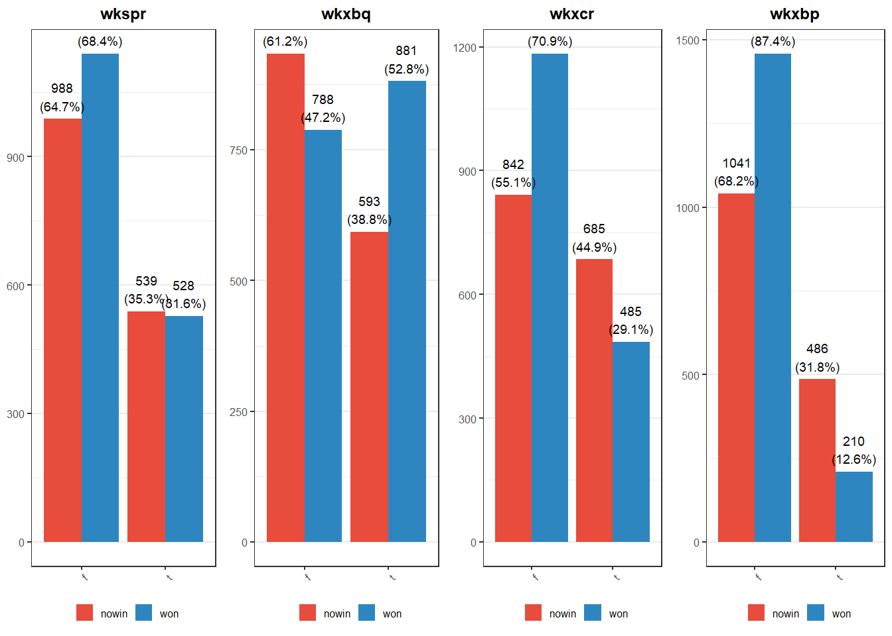
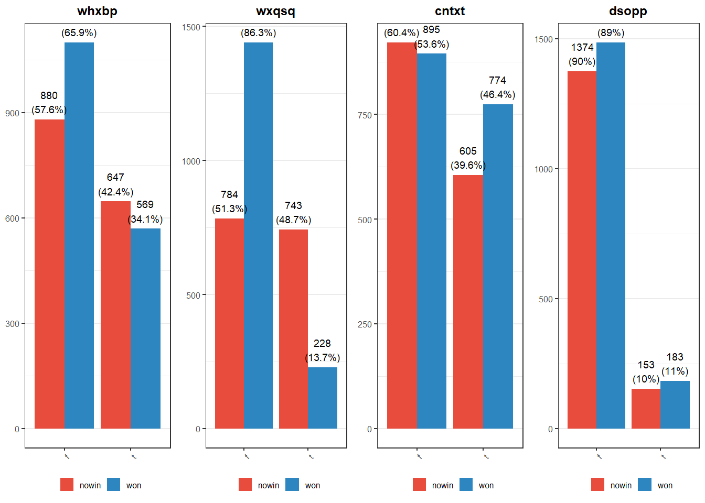
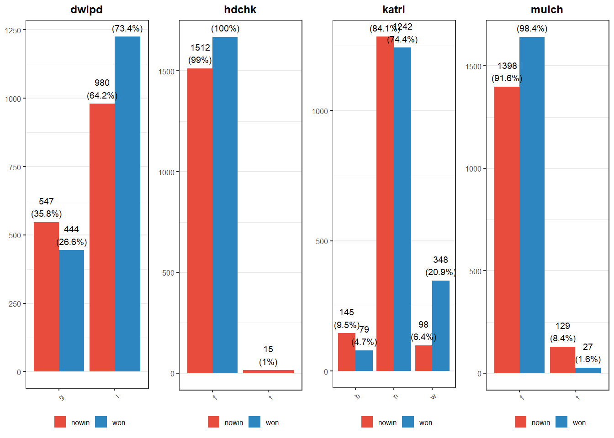
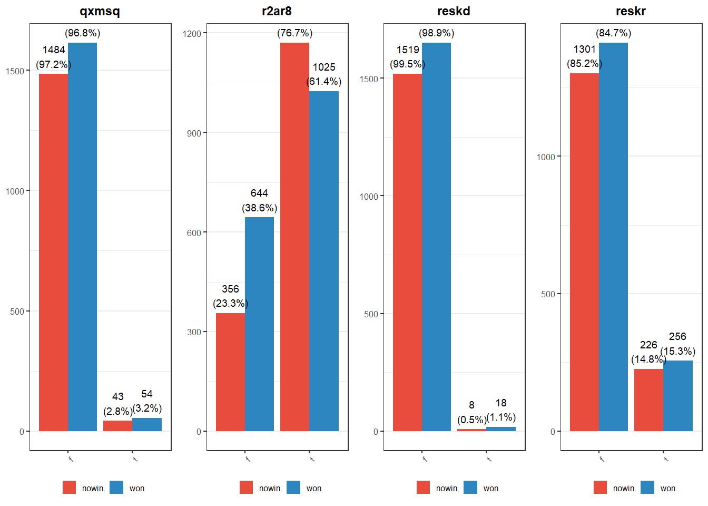


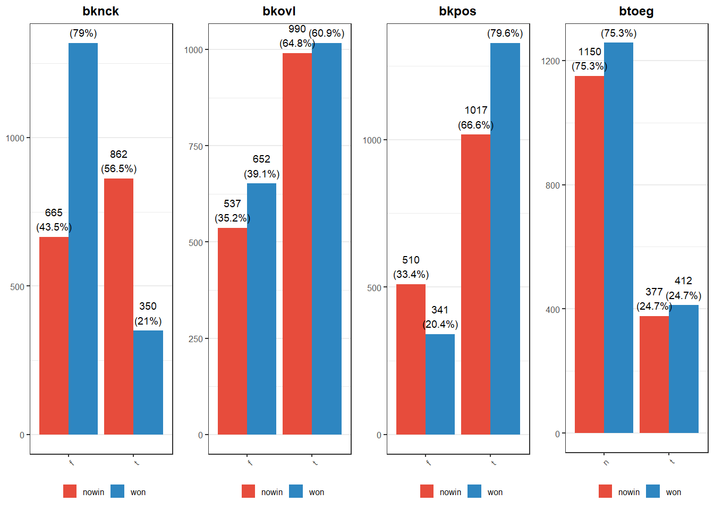
Factores asociados con la victoria (won):
katri (w): Cuando el rey blanco controla el punto de intersección (katri = w), la proporción de won (20.9%) es más del triple que en nowin (6.4%). Controlar el punto de intersección impide que la torre blanca sea clavada.
rkxwp (t): Cuando la torre blanca amenaza al peón negro (rkxwp = t), el 23.9% de los casos son won y el 15.8% son nowin. La amenaza de la torre sobre el peón favorece a las blancas, pero no es un factor determinante por sí solo.
bkpos (t): Cuando el rey negro está en posición de posible clavada (bkpos = t), es ligeramente más común en won (79.6%) que en nowin (66.6%). Sin embargo, la diferencia no es muy grande, lo que indica que no es un factor determinante por sí solo. La posición del rey negro en posible clavada puede favorecer a las blancas, pero otros factores son más importantes.
Factores asociados con la no victoria (nowin):
rimmx (f): Cuando la torre blanca no puede ser capturada de forma segura por el rey negro (rimmx = f), se da el 100% de los casos de nowin. Esto significa que, si la torre está segura pero no puede atacar el peón, este corona sin oposición. Esta es la relación más fuerte.
bkna8 (t): Cuando el rey negro está en a8 (bkna8 = t), es 5 veces más frecuente en nowin (10.2%) que en won (1.2%). Esto indica que la presencia del rey negro en a8 es un predictor fuerte de nowin, ya que el rey negro defiende la casilla de coronación y protege el peón.
bknck (t): Cuando el rey negro está en jaque (bknck = t), es 2.7 veces más frecuente en nowin (56.5%) que en won (21.0%). Esto indica que el jaque al rey negro no siempre es favorable para las blancas.
wkxbp (t): Cuando el rey blanco puede capturar el peón (wkxbp = t), es 2.5 veces más frecuente en nowin (31.8%) que en won (12.6%). Esto es contra intuitivo, ya que se esperaría que capturar el peón llevara a la victoria, pero los datos muestran lo contrario.
wxqsq (t): Cuando las blancas controlan la casilla de coronación a8 (wxqsq = t), es 3.5 veces más frecuente en nowin (48.7%) que en won (13.7%). Esto es contra intuitivo también.
Variables con poca diferencia:
Las variables wkblk, wknwy, dsopp, qxmsq, reskd, reskr y btoeg presentan distribuciones muy entre won y nowin, lo que indica que podrían no ser útiles para predecir el resultado.
2.5 Relaciones entre variables predictoras
vars_predictoras <- colnames(datos)[colnames(datos) != "class"]
# 2. Calcular Cramér's V solo entre predictoras
cramer_matrix_pred <- matrix(0,
nrow = length(vars_predictoras),
ncol = length(vars_predictoras))
rownames(cramer_matrix_pred) <- vars_predictoras
colnames(cramer_matrix_pred) <- vars_predictoras
for (i in 1:length(vars_predictoras)) {
for (j in 1:length(vars_predictoras)) {
cramer_matrix_pred[i, j] <- cramer_v(datos[[vars_predictoras[i]]],
datos[[vars_predictoras[j]]])
}
}
# 3. Guardar heatmap de predictoras (sin class)
png("heatmap_cramer_predictoras.png",
width = 3000,
height = 3000,
res = 200)
cramer_matrix_pred %>%
as.data.frame() %>%
rownames_to_column("var1") %>%
pivot_longer(-var1, names_to = "var2", values_to = "cramer") %>%
ggplot(aes(x = var1, y = var2, fill = cramer)) +
geom_tile(color = "white", size = 0.3) +
geom_text(aes(label = round(cramer, 2)),
size = 3.5,
color = "black") +
scale_fill_gradient2(
low = "white",
mid = "lightblue",
high = "steelblue",
midpoint = 0.3,
limits = c(0, 1),
name = "Cramér's V"
) +
labs(
title = "Matriz de asociación entre variables predictoras (Cramér's V)",
subtitle = paste("Excluyendo 'class' (", length(vars_predictoras), " variables)", sep = ""),
x = "",
y = ""
) +
theme_minimal(base_size = 10) +
theme(
axis.text.x = element_text(angle = 90, hjust = 1, vjust = 0.5, size = 12),
axis.text.y = element_text(size = 12),
plot.title = element_text(size = 20, face = "bold", hjust = 0.5),
plot.subtitle = element_text(size = 16, hjust = 0.5),
legend.position = "right",
legend.title = element_text(size = 14),
legend.text = element_text(size = 12),
panel.grid = element_blank()
)
dev.off()## png
## 2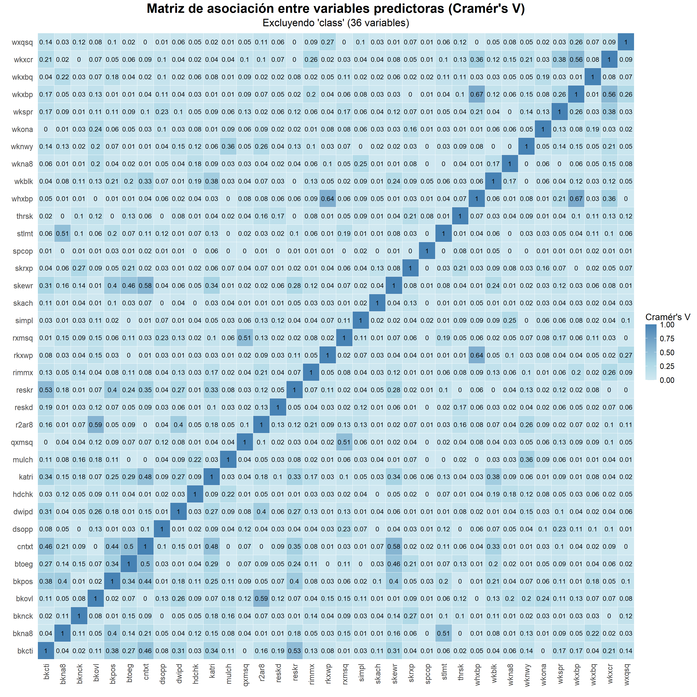
pares <- cramer_matrix_pred %>%
as.data.frame() %>%
rownames_to_column("var1") %>%
pivot_longer(-var1, names_to = "var2", values_to = "cramer") %>%
filter(
var1 != var2,
var1 < var2
) %>%
arrange(desc(cramer))
knitr::kable(head(pares, 5),
caption = "Top 5 pares de variables predictoras con mayor asociación",
col.names = c("Variable 1", "Variable 2", "Cramér's V"),
digits = 3)| Variable 1 | Variable 2 | Cramér’s V |
|---|---|---|
| whxbp | wkxbp | 0.673 |
| rkxwp | whxbp | 0.639 |
| bkovl | r2ar8 | 0.591 |
| cntxt | skewr | 0.579 |
| wkxbp | wkxcr | 0.564 |
pares %>%
head(5) %>%
ggplot(aes(x = reorder(paste(var1, "↔", var2), cramer), y = cramer, fill = cramer)) +
geom_col(width = 0.7) +
coord_flip() +
scale_fill_gradient(low = "lightblue", high = "darkblue") +
geom_text(aes(label = round(cramer, 3)), hjust = -0.2, size = 3.5) +
labs(
title = "Top 5 asociaciones entre variables predictoras",
x = "Par de variables",
y = "Cramér's V"
) +
theme_bw(base_size = 11) +
theme(legend.position = "none")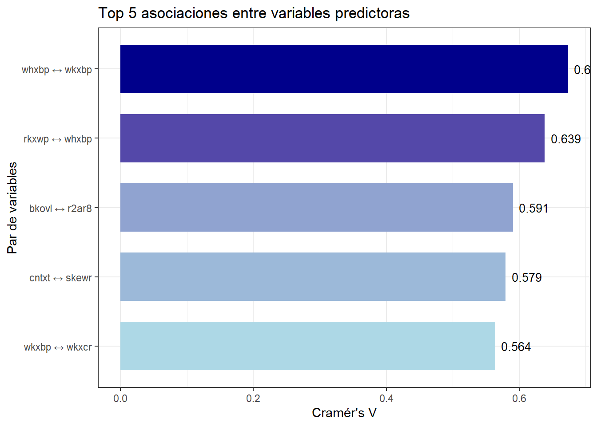
Para evaluar si existen variables redundantes (que miden información similar), se calculó la matriz de Cramer’s V excluyendo la variable objetivo class. Los valores más altos indican que dos variables están asociadas entre sí, lo que sugiere que podrían estar midiendo conceptos relacionados:
whxbp ↔︎ wkxbp (0.67) Captura del peón negro por la torre blanca vs captura por el rey blanco. Ambas miden si el peón puede ser capturado, lo que sugiere que están altamente relacionadas.
rkxwp ↔︎ whxbp (0.639) Amenaza de la torre blanca sobre el peón vs ataque de la torre blanca al peón. Miden conceptos similares, ambos de la torre blanca sobre el peón negro.
bkovl ↔︎ r2ar8 (0.591) Rey negro sobrecargado vs acceso de la torre blanca a la columna A o fila 8. Si la torre blanca tiene acceso, el rey negro se sobrecarga al tener que defender múltiples amenazas.
cntxt ↔︎ skewr (0.579) Rey negro en el borde (no a8) vs posibilidad de clavada. Si el rey negro está en el borde, es más vulnerable a una clavada de la torre blanca.
wkxbp ↔︎ wkxcr (0.564) Rey blanco captura el peón vs rey blanco ataca b7. Ambas miden la capacidad del rey blanco para presionar al peón negro.
Ninguno de estos valores superan el 0.7, lo que indica que no hay variables altamente redundantes, es decir, que presenten multicolinealidad muy alta. Sin embargo, las relaciones moderadas (0.5 - 0.67) sugieren que algunos pares de variables miden conceptos relacionados desde diferentes perspectivas.
2.6 Conclusiones
El análisis exploratorio permitió identificar los principales factores que determinan el resultado del final de ajedrez Rey+Torre (blancas) vs Rey+Peón (negras) en a7. La variable objetivo class presenta una distribución prácticamente balanceada (52.2% won, 47.8% nowin), lo que indica que no hay sesgo hacia ninguna de las clases. El estudio de las variables predictoras revela que la mayoría son binarias (t/f), con excepción de dwipd (g/l) y katri (la única ternaria: n/b/w). El análisis de frecuencias muestra que tácticas avanzadas como el jaque oculto (hdchk, 0.5%), la re-clavada diferida (reskd, 0.8%), la clavada tras jaques (skach, 0.3%) y la oposición especial (spcop, 0%) son muy raras. En cuanto a la asociación con class, la variable más determinante es rimmx (Cramér’s V = 0.45): cuando la torre blanca no puede ser capturada de forma segura (rimmx = f), se da el 100% de los casos de nowin, lo que indica que la torre blanca es la pieza clave para detener el peón. Otras variables con alta asociación son wxqsq (0.38) y bknck (0.365). El análisis de redundancia entre predictoras muestra que no hay variables altamente redundantes (ninguna comparación supera 0.7 de Cramér’s V), aunque se observaron relaciones moderadas entre conceptos relacionados, como whxbp ↔︎ wkxbp (0.67), que miden presión sobre el peón desde diferentes perspectivas. En conjunto, se concluye que el resultado del final depende de la combinación de múltiples factores, destacando la seguridad de la torre, el control del punto de intersección y la posición del rey negro.